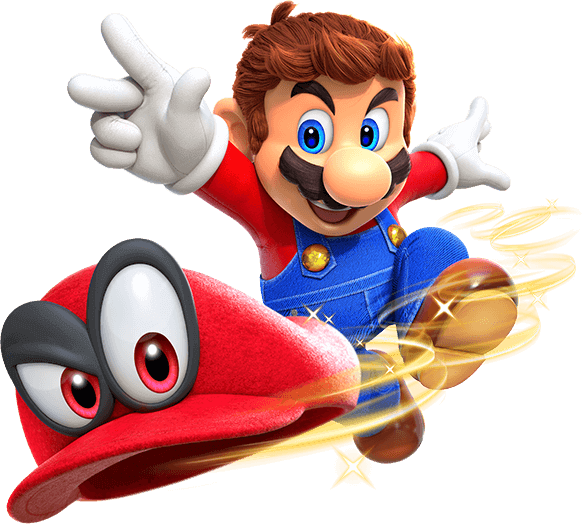

PERSONNAGE
Mario

Le héros incontesté du royaume Champignon embarque pour un long voyage à travers le monde pour empêcher Peach d'être mariée de force à Bowser.
Bowser
L'ennemi juré de Mario . Bowser est un personnage de Super Mario Odyssey. Il kidnappe la princesse Peach et Tiara, et veut épouser la princesse Peach. Il engage les Broodals pour combattre Mario alors qu’il tente de sauver la princesse Peach.

A PROPOS
Super Mario Odyssey se deroule dans divers pays que Mario visite comme, par exemple, une ville peuplee d'humains s'appelant New Donk City. Similairement a Super Mario 64 et Super Mario Sunshine, il s'agit d'un jeu de plates-formes en 3D et en monde ouvert. Le heros moustachu est de retour. Cette fois, il est aide de Cappy, un Chapiforme qui prend possession de sa casquette en la dotant d'yeux. Mario peut interagir avec lui en se chapimorphosant en d'autres entites ou en s'en servant comme boomerang, comme plate-forme volante et bien plus encore.
Contact
Ebouche@gaming.tech
Nbudalic@gaming.tech